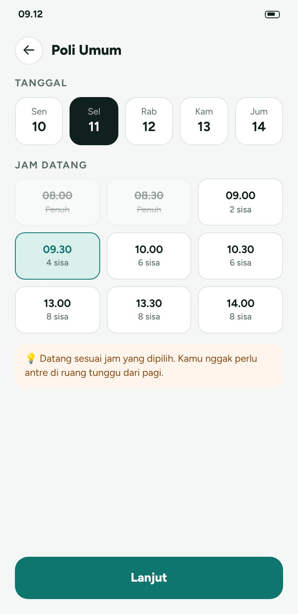
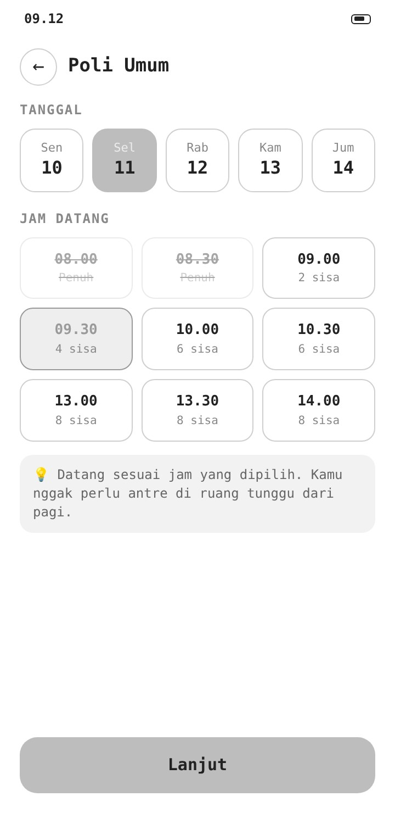

UI/UX Designer · 2 tahun pengalaman
Dinda Prameswari
Saya merancang aplikasi yang bikin urusan sehari-hari jadi lebih sederhana, mulai dari riset pengguna sampai prototype yang siap dibangun developer.
Terbuka untuk posisi UI/UX Designer atau Product Designer, Jakarta atau remote
- 3aplikasi rilis ke pengguna
- 46partisipan riset diwawancara
- 82skor kegunaan (SUS) terbaik
Case study 01
Antre: datang ke klinik tanpa menunggu berjam-jam
Redesign aplikasi antrean untuk klinik pratama, supaya pasien cukup datang di jam yang dipilih.
01 · Masalah
Pasien antre dari pagi, padahal dokternya baru datang jam sembilan.
Klinik memakai nomor antrean kertas yang dibagikan sejak jam 6 pagi. Pasien datang lebih awal supaya dapat nomor kecil, lalu menunggu rata-rata 72 menit di ruang tunggu yang penuh.
02 · Riset
12 wawancara pasien dan 2 hari observasi di ruang tunggu.
“Saya nggak tahu kapan dipanggil, jadi nggak berani ke mana-mana.”
Temuan: yang bikin capek bukan lamanya, tapi ketidakpastian.
“Aplikasinya ada, tapi harus isi formulir panjang dulu.”
Temuan: 7 kolom data bikin orang menyerah sebelum dapat nomor.
“Pakai BPJS harus tanya ke loket lagi.”
Temuan: status BPJS harus kelihatan sejak awal.
03 · Alur pengguna
Dari 9 langkah menjadi 5, dengan pilihan jam datang.
- Buka aplikasi
- Pilih poli
- Konfirmasi + BPJS
- Datang 10 menit sebelum giliran
04 · Wireframe ke desain akhir
Geser untuk membandingkan wireframe dan desain akhir.


- Slot jam yang penuh dicoret, bukan disembunyikan, supaya pasien paham kenapa pilihannya sedikit.
- Sisa kuota per jam ditampilkan agar pasien bisa memilih jam yang lebih sepi.
- Satu tombol utama di bawah, mudah dijangkau ibu jari.
05 · Prototype
Coba sendiri: ambil nomor antrean dalam 4 ketukan.
Selamat pagi, Rani 👋
Mau periksa ke poli mana hari ini?
Buka · 07.00–21.00
Pilih poli
Tanggal
Jam datang
💡 Datang sesuai jam yang dipilih. Kamu nggak perlu antre di ruang tunggu dari pagi.
Ketuk bagian yang berkedip oranye untuk lanjut.
- Pilih Poli Umum
- Pilih jam datang, lalu Lanjut
- Cek data, lalu Ambil nomor antrean
- Lihat nomor dan perkiraan waktumu
06 · Hasil
Diuji ke 18 pasien, lalu dirilis bertahap di 3 klinik.
Yang saya pelajari: pasien lansia butuh teks lebih besar dan tombol kembali yang jelas. Dua hal ini saya perbaiki setelah uji pengguna kedua.
Ini baru cuplikan template Layar.
Sisa halaman sengaja kami sembunyikan. Mau lihat versi lengkapnya? Chat kami, demo penuh kami kirim lewat WhatsApp.
- case study kedua
- 4 karya lainnya
- bagian tentang
- kontak